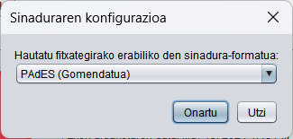

Pantaila honetatik, sinatu nahi dituzun dokumentu edo direktorioak hauta ditzakezu.
Dokumentu bat edo gehiago hauta ditzakezu "Hautatu sinatu beharreko fitxategiak" botoia sakatuta edo dokumentuak eta/edo direktorioak adierazitako eremura arrastatuta (lauki gris iluna).
Sinatu beharreko dokumentuak kargatzean, horiei buruzko xehetasun batzuk erakutsiko zaizkizu. Xehetasun horiek aldatu egingo dira fitxategi bakarra edo batzuk hautatu ahala:
Sinatu nahi zenituen dokumentuak arrastatzeko gaitutako laukian, hautatutako fitxategiari edo fitxategiei buruzko informazioa agertuko zaizu.
Fitxategi bat bakarrik hautatu baduzu eta dokumentu-mota horietarako aurrez zehaztutako aplikazio bat baduzu, "Ikusi fitxategia" botoia agertuko zaizu, eta horrekin ireki ahal izango duzu. Gainera, fitxategiari eta sortuko den sinadurari buruzko informazioa agertuko zaizu (formatua, sinadura-atributuak eta sinadura-aukerak). Sinaduran bertan sartuko den hautatutako sinadura-formaturako datuak konfiguratu badira (adibidez, sinadura-politika), "Ikusi guztiak..." esteka bistaratuko da, eta definitutako sinadura-atributu guztiak ikusi ahal izango dira.
Fitxategi edo direktorio bat baino gehiago hautatu badira, bi klik egin ditzakezu irekitzeko, edo saguaren bigarren botoiarekin sakatu "Ikusi fitxategia" eta "Ikusi sinaduraren atributuak" aukerak ikusteko.
Pantailaren beheko aldean dagoen "Sinatu" botoiak dokumentua sinatzeko aukera emango dizu. Zure sistema eragileko ziurtagiri-biltegia oraindik kargatzen amaitu ez bada, botoia desgaituta agertuko da, eta itxaroteko irudi animatua izango du. Kasu horretan, itxaron, mesedez, desagertu arte eta botoia gaitu arte.
botoia sakatutakoan, programak sinadura bat sortuko du hautatutako dokumentu bakoitzerako. Dokumentu-mota bakoitzerako, lehentasun-paneletik a formatuarekin sortuko da sinadura.
Hautatutako fitxategia beste formatu batean sinatu nahi bada, formatuari buruzko informazioaren ondoan dagoen "(Aldatu)" esteka hautatuz aldatu ahal izango da. Hautatzean, leiho hau irekiko da, eta nahi den formatua aukeratu ahal izango da:

Taula honetan ageri dira bereizten diren dokumentu-motak eta onartzen dituzten sinadura-formatuak:
| Dokumentu-mota | Ikonoa | Sinadura-formatuak (lehenetsia nabarmenduta) |
|---|---|---|
| PAdES, CAdES eta XAdES. | ||
| XML | XAdES eta CAdES. | |
| Faktura elektronikoa | Faktura E, CAdES eta XAdES. | |
| OOXML | CAdES, XAdES eta OOXML (Office Open XML). | |
| ZFD | CAdES, XAdES eta ODF (Open Document Format). | |
| Gainerako dokumentuak | CAdES eta XAdES. | |
| Sinadura elektronikoa | Jatorrizko sinaduraren berdina. |
Azken kasu horren salbuespen gisa, ezin da berriro sinatu faktura elektronikoa, dagoeneko sinatuta dagoena, Faktura-e formatuan.
Fitxategiak sinatzean, sortutako sinadura gordetzeko leiho bat bistaratuko da, baldin eta dokumentu bat edo elkarrizketa bat baino hautatu ez bada irteerako direktorioa hautatzeko, bat baino gehiago hautatu badira. Sinadurak gorde ondoren, sinaduraren xehetasunen pantaila bistaratuko da.
Autofirman instalatutako plugin-ek alda dezakete sinadura-prozesua. Kontsultatu pluginen kudeaketari buruzko atala, horiei buruz gehiago jakiteko.
Botoien eta elementu grafikoen osagarri gisa, menu-barra edo teklatu-azeleragailu hauek ere erabil ditzakezu:
Kontrola (“macOS” aukeran) + S: Hautatu fitxategia. Kontrola (“macOS”-en) + F: Hautatutako fitxategia sinatzea.Fitxategi-mota bakoitzak erabili beharreko sinadura-formatua eta formatu horien berezitasunak konfigura ditzakezu, baita aplikazioaren portaera orokorra ere, Opciones menuaren bidez eskura dagoen lehentasun-paneletik abiatuta.
Sinadura-formatu edo -aukera batzuek konfigurazio-aukera osagarriak bistara ditzakete sinadura-leihoan bertan:
Dokumentu bakar baten PDF sinadurak aukera ematen du sinadura dokumentuan agertzen dena konfiguratzeko. Horretarako, "PDF formatuan ageriko sinadura egin" laukitxoa markatu behar da.
Sinadura egitean, PDFan ageriko marka bat ere sar daiteke. Aukera honek PDFa aldatuko du hautatutako irudia gehituta, eta, ondoren, sinatu egingo du. Funtzio hau erabiltzeko, "Txertatu marka ikusgai PDFan" laukia markatu behar da. Lauki hau desgaituta egongo da PDF dokumentua sinatuta badago, marka bat txertatzeak aurreko sinadurak baliogabetuko bailituzke.
Beste aukera bat PDF ziurtatu bat sortzea litzateke. Egin beharreko sinadura PAdES formatua bada eta dokumentua aldez aurretik sinatuta ez badago egin daiteke. "Sortu PDF ziurtatua" laukia markatzean egiten da, eta laukitxo horren azpian aukeren zerrendan hautatutako ziurtapen-maila aplikatzen zaio dokumentuari. Aukeren zerrenda desgaituta egongo da "Sortu PDF ziurtatua" laukia gaituta ez badago.
Aukera horiek lehenespenez markatuta edo markatu gabe agertuko dira, lehentasun-panelean ezarritakoaren arabera. Laukitxo horietako bat hautatzean, PDFn ikusgai dauden elementuen propietateen panela agertuko zaigu.
Sinadura-dokumentu bati sinadura bitar edo XML berri bat gehitzean, sinadura berria dokumentuaren gainean (berrsinadura) edo lehendik sartutako sinaduren gainean (baieztapena) egingo den konfigura daiteke. Aukera hori CAdES eta XAdES formatuen lehentasun-paneletik konfigura daiteke. Aplikatzen duzunean, Autofirmak "Aukera aurreratuak" botoia erakutsiko dio erabiltzaileari, konfigurazio-aukera horietara zuzenean sartzeko.
Dokumentu anitzen sinadura-prozesuetan ez da sinadura-prozesua gelditzera behartzen duen konfiguraziorik egiten. Adibidez, PDFetako pasahitza ez da eskatuko, eta sinadura ikusgaiaren eta marka ikusgaiaren konfigurazioa behin bakarrik eskatuko da, eta konfigurazio bera duten dokumentu guztiei aplikatuko zaie.